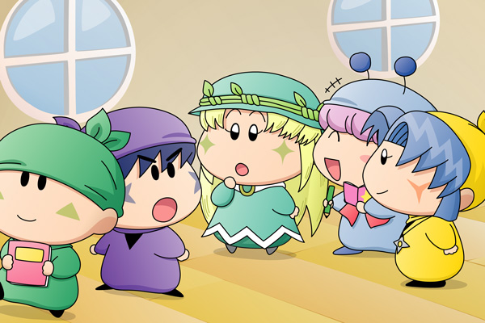

クモモ「皆さん、残っているお菓子には手を付けないで欲しいクモ。
もしかしたらニコニコンＣが皆さんのお菓子にも塗られているかも
しれないクモ」
クモモがみんなに向かって告げました。
食堂にはミルモ、リルム、ムルモ、パンタ、サスケ、ハンゾー、アクミ、アロマ、そしてクモモの９人がいて、ヤマネはパピィを連れて３階の部屋へ行っています。
集まっている妖精たちは、お菓子を食べていたときの表情から一転して、みんな不安そうな表情を浮かべています。
アクミ「そうだな、あたいもあんな風になりたくないからな」
ハンゾー「パピィはあんなに笑ってもよくあごがはずれないのら～」
サスケ「いくらなんでも笑いすぎだぜ」
ムルモ「パピィ・・・」
ミルモ「ヤシチはともかくパピィは心配だよな。
それにしても妖精通販のアイテムは恐ろしいものばかりだぜ」
クモモ「ニコニコンＣは普通に使えばあそこまでは笑わないクモよ。
ですから残っているお菓子は・・・」
リルム「でも皆さん、お昼のお菓子はほとんど食べ終わってるようですわ」
サスケ「オイラはもうとっくに全部食べ終わってるぜ」
パンタ「ムルモお兄ちゃん以外はみんな自分のコーヒーマシュマロを
食べ終わってるみたいですっちね」
アロマ「私はコーヒーマシュマロは食べ終わったけど・・・
まだカラフルポップコーンが残っていますわ・・・」
パンタ「ボクたんも芋羊羹がまだ残っているですっち」
ムルモ「確かに他のお菓子にもニコニコンＣが塗られている
可能性は十分にありそうでしゅね」
クモモ「そうクモ。この場はいったん片付けるから、
皆さんはその間にリビングでのんびりしていて欲しいクモ」
サスケ「残ったお菓子がもったいないだぜ・・・」
アロマ「この騒ぎでは仕方ありませんわ」
クモモ「では３時のおやつにもまたお菓子を用意させていただくクモ」
ミルモ「うひょー、おやつもあるのか！早く食いてーぜ」
リルム「もう！ミルモ様ったら・・・」
クモモを残して、みんなはリビングへ移動しました。
＊
ムルモ「お兄たま～」
ミルモ「ん？何だムルモ」
ムルモの呼びかけに、ミルモとリルムが振り返りました。
ムルモ「お兄たまはお昼ごはんの直前はどこに行ってたんでしゅか？」
ミルモ「な、何だよ急に・・・」
ムルモ「アリバイ調査でしゅよ。
お兄たまはリルムしゃんと一緒に先に食卓へ行ってたんでしゅよね？」
ミルモ「おい、オレたちがニコニコンＣを入れたとでも言うのかよ」
ムルモ「それはどうでしゅかね。
ボクは探偵としてみんなの行動を調べているだけでしゅから」
リルム「ミルモ様とわたくしは確かに皆さんよりも先に食卓へ行きましたわ」
ミルモ「おい、リルム・・・」
リルム「でもクモモ様もいらっしゃらなくて、ミルモ様と一緒に
皆さんが来られるのをお待ちしていましたわ」
ミルモ「そうだ、だいたいオレがムルモのコーヒーマシュマロに
ニコニコンＣを塗る理由なんてないだろ？」
ムルモ「ふ～ん、そうでしゅかね・・・」
ミルモ「なんか気に障る言い方だな・・・」
ムルモはミルモたちに背を向けて手帳にメモしています。
そして鉛筆を動かしていた手を休めると、振り返ってミルモに言いました。
ムルモ「気をつけてくだしゃいね。
お兄たまは容疑者の一人なんでしゅから」
ミルモ「別にいいけど、オレは何もやってないんだから他のやつも調べた
方がいいぞ」
＊
ムルモ「そこの二人、ちょっと待ったでしゅ」
ムルモがお絵描き帳を持ったハンゾーとサスケを呼び止めました。
サスケ「何だよムルモ」
ハンゾー「ボクたちに何か用なのら～？」
ムルモ「質問タイムでしゅ。
お昼ごはんまで二人は何をしていたんでしゅか？」
ハンゾー「うーん、ボクはサスケとヤマネと一緒にリビングで遊んでいたのら」
サスケ「オイラたち、コーヒーマシュマロにニコニコンＣを塗るなんて
卑怯な真似はしないぜ」
ムルモ「そんなこと言って、ボクに何か恨みを持ってたりしないでしゅか？」
サスケ「オイラたちを疑ってるのかだぜ！」
ちょうどその時、ヤマネがリビングへ戻ってきました。
ヤマネ「サスケ先輩、ハンゾー先輩、どうなされたのでございますか？」
ハンゾー「ムルモがボクたちがコーヒーマシュマロにニコニコンＣを
塗ったと言ってくるのら～」
ムルモ「そこまでは言ってないでしゅよ。
そんなことよりヤマネしゃん、パピィの様子はどうでしゅか？」
ヤマネ「笑い疲れてしまわれたのか、今はベッドでぐっすりお休みに
なられているでございます」
ムルモ「そうでしゅか、ヤマネしゃんに感謝するように
後でパピィのやつに言っておくでしゅ」
サスケ「じゃあオイラたちはあっちでお絵描きするぜ。
ヤマネも一緒にお絵描きしようだぜ」
ヤマネ「はいっ、サスケ先輩！」

今度はアロマが通りかかりました。
ムルモ「アロマしゃん！ちょっとお話を聞かせて欲しいでしゅ～」
アロマ「どうかされましたか？ムルモ様」
サスケ「あー、またムルモのやつブリッコしているぜ」
アロマ「私はアクミさんとパンタさんと一緒に折り紙を折っていましたわ」
ムルモ「その時に食卓へは行かなかったでしゅか？」
アロマ「私は行かなかったけど、食卓まで飛んでいった紙飛行機を
拾いに、アクミさんとパンタさんが何度か行っていますわ」
ムルモ「なるほど、これは重要証言でしゅね」
今回はムルモの聞き込み編その１です。説明くさくて長い文章になるので、何回かに分けて掲載する予定です。パピィのために探偵ムルモが本気になって調査に乗り出したわけですが、みんなの反応が悪くて調査が思うように進まないご様子。とりあえず聞き込みは次回にも続きますので、この文字だらけの展開にもう少しお付き合いくださいませ(^^;。
(2008/3/30)